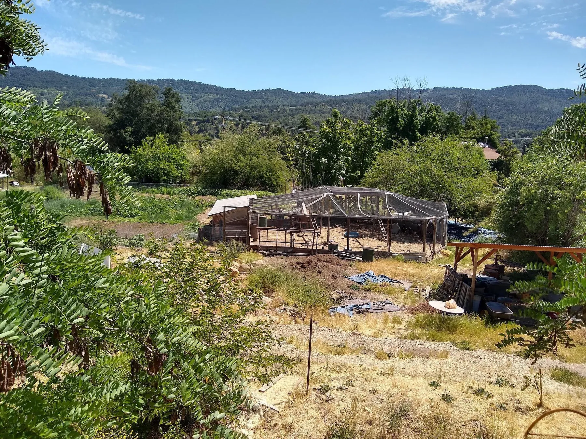
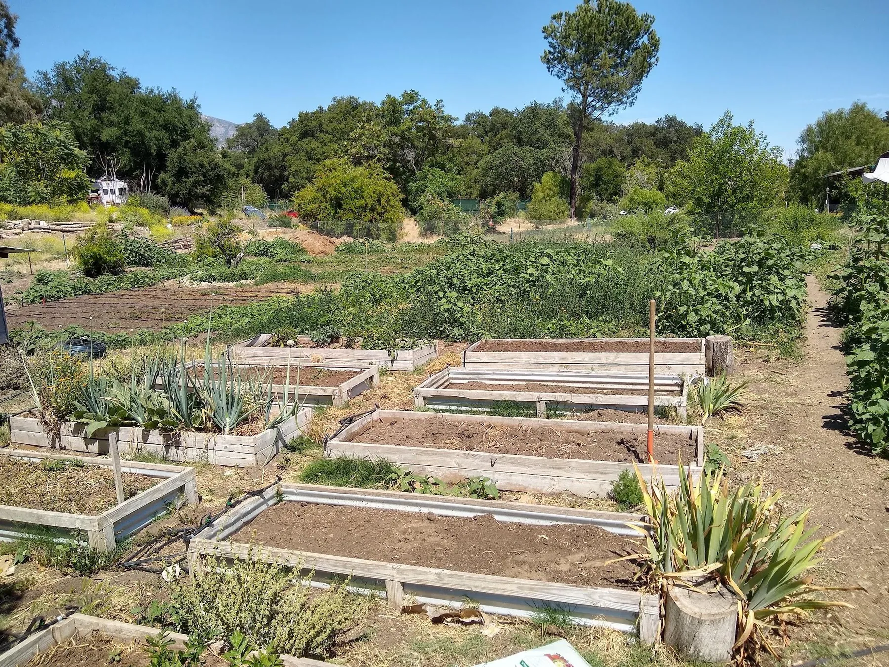
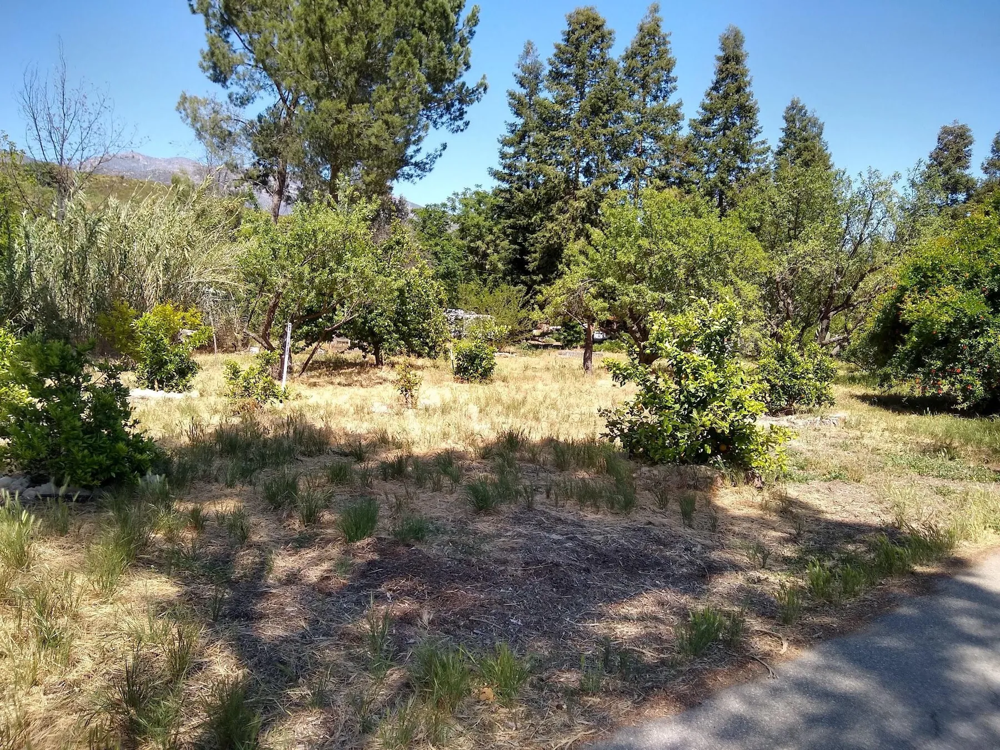
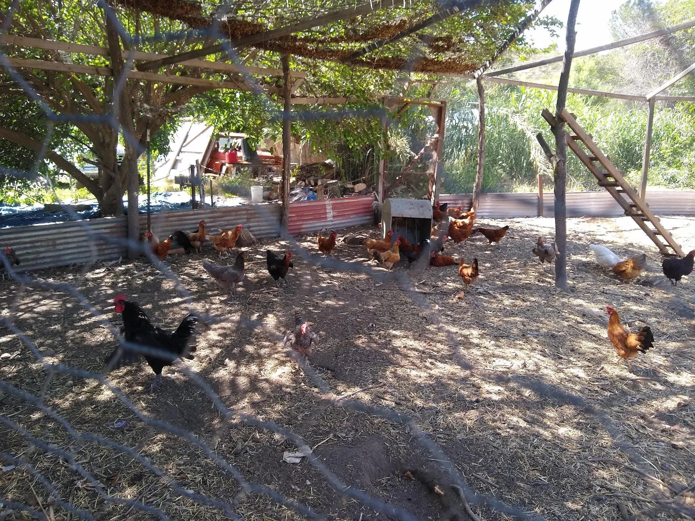
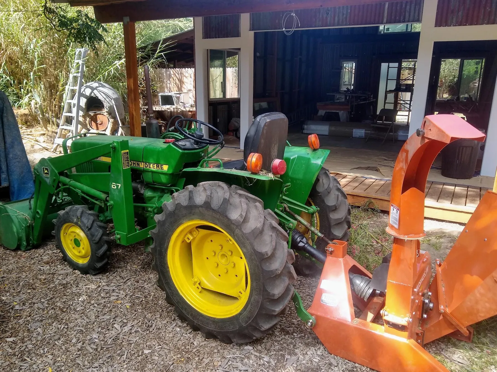
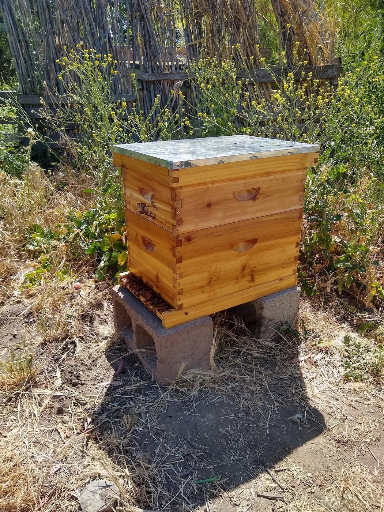

Chapter 02 · Thirty years of layers
Site Tour
The property is a mosaic of productive landscapes, dwellings, workshops, natural buildings and semi-wild edges.


The garden
A fenced growing area close enough to the community core for daily attention.

West orchard
Citrus, persimmon and other mature fruit trees.

Chicken system
Eggs, manure, soil disturbance and food-scrap processing.

Garden shed
A practical work area beside a greenhouse needing seasonal adaptation.

Cabins and small dwellings
Simple homes tucked into the shade, each with its own relationship to paths and shared facilities.

Earth dome
A compact natural building that demonstrated remarkable fire resilience.

Workshop
Shared tools and repair capacity multiply what the community can accomplish.

Laundry and bathhouse
Shared sanitation infrastructure with an opportunity for greywater reuse.

Tractor and tools
A loader, backhoe and chipper create unusual implementation capacity.

Bees
Pollination, honey and a direct relationship with flowering cycles.

Lion Creek and Zone 5
The steep, dense southern edge is habitat, watershed and a place for observation rather than constant intervention.